Hi all,
Recently I got the chance to chat with Jordan who has been posting some pretty awesome projects on his Git Repository and Tableau Public. One that caught my eye was in the football community.
Today he was kind enough to share some of the data processing that goes into retrieving, cleaning and storing understat data in a database. A great project to replicate for those in the football community or looking to expand some of their core analytics skills.
I'm excited to see how Jordans work expands, he has some serious talent and such a clear method to the way he works and presents that information back in such an articulate manner, just check out the blog below.
Jordan, over to you.
ETL Process - From API to DatabaseHi, I’m Jordan Pickles, a data analyst currently working in the aviation and travel industry. My academic background is in Exercise and Health Scientific Research, where I contributed to clinical trials and Health Tech R&D projects. Along the way, I discovered how much I loved working with data, which led me to make the jump from research into a data role. To develop my skills, I completed the AI Core Data Science Accelerator program, which gave me a solid technical foundation. For the past two years, I’ve been putting those skills to work as a data analyst, turning data into insights and solving real-world problems.Over the past few months, I’ve spent some of my spare time working with football data, aiming to improve my data skills as well as working with some different and intriguing data. In November 2024, I submitted my first visualization to SportsVizSunday, which extracted data from the Understat API package and visualised the Top Goalscorers in European Soccer Leagues in Europe while also developing techniques for dynamic zone visibility in tableau (see blog post).
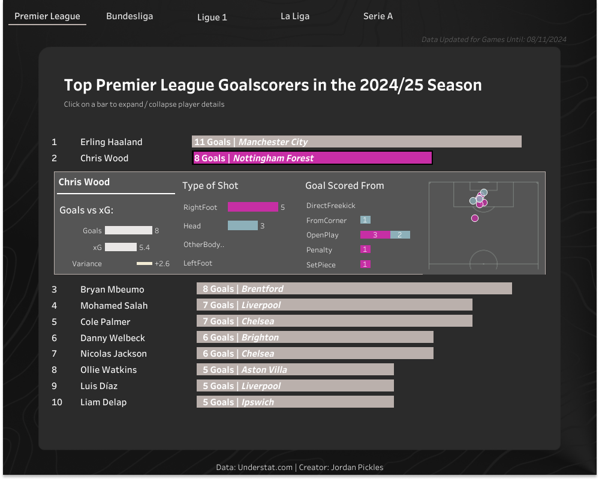Building on that project I wanted to dive deeper into handling data in Python by creating a fully automated ETL (Extract, Transform, Load) pipeline resulting in a database consisting of a match data table and shot data table which can be queried for projects going forward. Detailed below is the process of extracting data from the Understat API package, cleaning and transforming the data in Python and loading the data into a PostgreSQL database. All the code for this project can be found in the GitHub Repository.Data Collection, Wrangling, and CleaningUnderstat.com provides data for football matches across the top 5 european leagues and the UnderstatAPI package provides a user-friendly endpoint to the API, making it an excellent starting point for football data analysis. The package provides options to retrieve information at various levels of aggregation (e.g. match, shot, teams etc). For further details on the possibilities of the Understat API package, check out the documentation. Match Data ExtractionThe first step when working with the understat API package is to initiate the client (see Figure 1below) which provides functions to interact with the API. Once the client has been initiated the next step is to collect the unique IDs for each match across the top five European leagues. The code below iterates through a list of league names, retrieving data for all matches in the league for the 2024 season by using the get_match_data function.
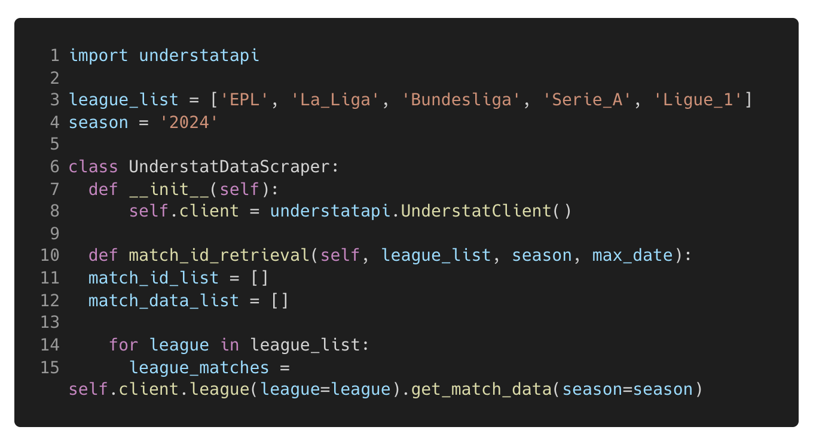
Figure 1. This code Initialises the Understat API client and collects a list of Match ID’s for each of the leagues available in the 2024 season.The function returns match data for each league in a semi-structured JSON format (see Figure 2 below) which is not suitable for analysis / uploading to a database, therefore the data needs to be extracted.
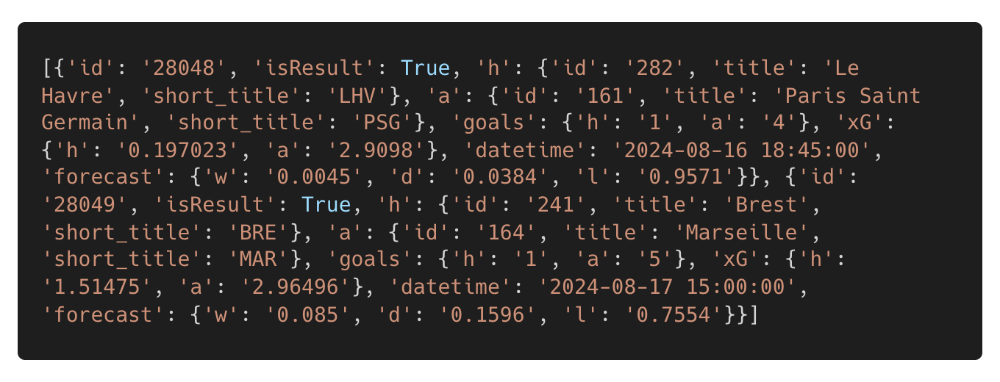
Figure 2. Shows the semi-structured data output for just two of the games retrieved from the code block in Figure 1.With the data in a semi-structured format, the next task required is to extract the data. The code in Figure 3 below iterates through each match present in the JSON output for the league currently being iterated through. The code initially checks that the game has already taken place (excluding future matches) and ensures that the match date is later than the latest date already in the database (when this isn’t the first time the code has been run), so only new games are returned. Once the match has been determined as required to be added to the database, the code extracts the necessary data into a dictionary of key-value pairs (e.g. Key: datetime: Value: 01/01/2025 15:00:00) with the data types declared for each variable. Each dictionary, representing one match, is then added to a list, until all matches from all leagues are present in the list. Once all the matches are present in the list it can be converted into a pandas DataFrame providing a structured table of columns and rows which is suitable for analysis / uploading to a database.
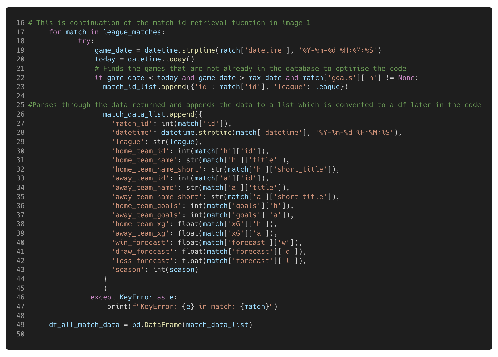
Figure 3. This code iterates through each Match present in the league_matches variable declared in Figure 1, extracting the information from each match returned in that league before adding the dictionary to a list which is later converted into a data frame. Note: This code is a continuation of the function in Figure 1.Shot DataA list of unique match ID’s collected from the code in Figure 3 can now be used to call the get_shot_data function, as shown in Figure 4 below. This function also returns data in a semi-structured format, with one dictionary for the home team data and one for the away team data. The code below extracts both dictionaries separately before concatenating them on top of each other to create one data frame for each match. All data frames are then appended to a list which can then be converted into one big data frame at the end of the code block. Similar to how the match data frame was created.
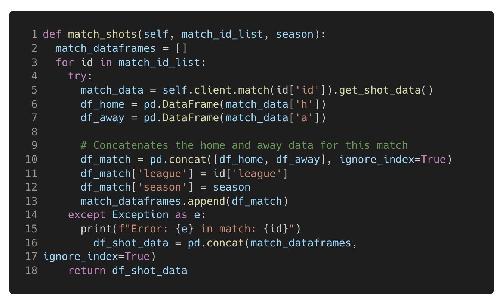
Figure 4. This code Iterates through the match Id list collected in the Figure 1 and Figure 3 and calls the get_shot_data function of the Understat API client to return the shot data for each match ID which is extracted and concatenated into a one data frame.Cleaning the Shot DataThanks to accessing the API, the data is well-structured and needs little cleaning. However, during exploratory data analysis and when converting the text data (the output of the Understat API function) to the appropriate data types, a few areas required some additional cleaning. The pandas and numpy packages in Python offer a range of functions that simplify the data cleaning process. In this project, the data cleaning involved tasks such as replacing parts of strings in columns, renaming and dropping columns, adding new columns based on specific logic, converting columns to the appropriate data types, dropping rows without coordinate data present and rescaling the coordinate data for the intended use case. The X and Y coordinates from Undertstat are between 0 & 1 but in-order to work on the images I visualise the data on (Statsbomb pitch of the mplsoccer package), an axis of 120, 80 is required, therefore the X and Y coordinates are rescaled.
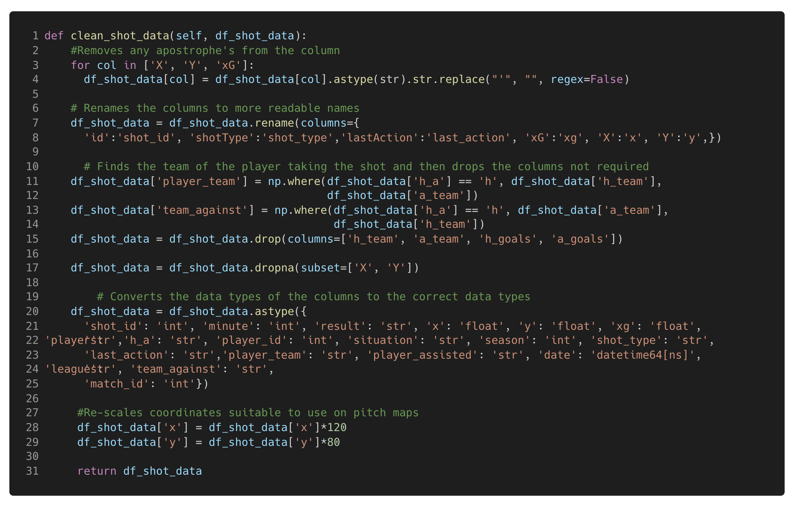
Figure 5. This code Cleans the shot df_shot_data frame that has been created in the previous code blocks.Database Creation and ManagementThe previous steps have now provided two clean and structured data frames suitable for use in the primary objective of this project, to build a database storing the collected data that can be queried not just for this project but for future projects as well. For the database server, I chose PostgreSQL (download here), which is a free database server that can be downloaded to both macOS and Windows. To interact with PostgreSQL from Python, there are two main packages: Psycopg2, a native PostgreSQL package in python, and SQLAlchemy, a Python package that supports interaction with various databases, including PostgreSQL.Psycopg2 allows for a direct connection to the Database API (DBAPI) and the execution of SQL commands as strings. On the other hand, SQLAlchemy provides Python-specific functions and objects that simplify interacting with the database (e.g. functions that are converted into SQL dialect by the package). In this project, I used a combination of both packages, leveraging the strengths of each to build and manage the database efficiently. For further reading into the differences between SQLAlchemy and PostgreSQL, check out this article.Step 1 - Installing the PackagesTo begin, the two required packages need installing, using a package manager of choice. In this project, I used pip as the package manager, see below the pip commands required in the terminal:
Psycopg2: ‘pip install psycopg2’
SQLAlchemy: ‘pip install SQLAlchemy’
Step 2 - Connecting to the DatabaseConnecting with Psycopg2Establishing a connection to the DBAPI from inside of your code editor is the key step, this allows you to interact with the database whilst still having all of the previous steps / variables in the code available to use, call and upload. Psycopg2 connects to the PostgreSQL DBAPI using the psycopg2.connect(<<Connection String>>) function (documentation for further detail). The connection contains multiple keyword argument details relevant to the local database which can be seen below (see figures 6 & 7). In this case, I’ve stored these database credentials in a YAML file, which can be easily opened and read with Python.
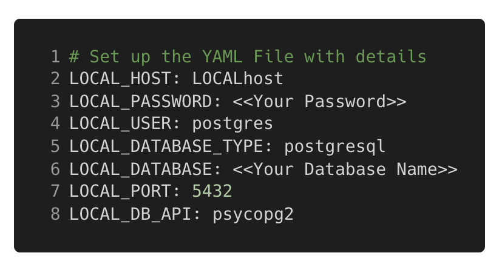
Figure 6. YAML file containing the database credentials required for the Psycopg2 connection.The psycopg2_connect function in my code (see Figure 7 below) handles the scenario where the database has not yet been created. If the database named in the YAML file doesn't already exist, a connection to the server is created instead of the database. The create_new_db function is then called to create the database within the PostgreSQL server. Once a connection has been established, a cursor is created, which allows Python code to execute PostgreSQL commands in a database session, just as is required when managing or querying the database. This create_new_db function creates a new database with the name stored in the YAML file using the cursor before closing the connection to the server, then the pscyopg2_conenction function can connect directly to the database.
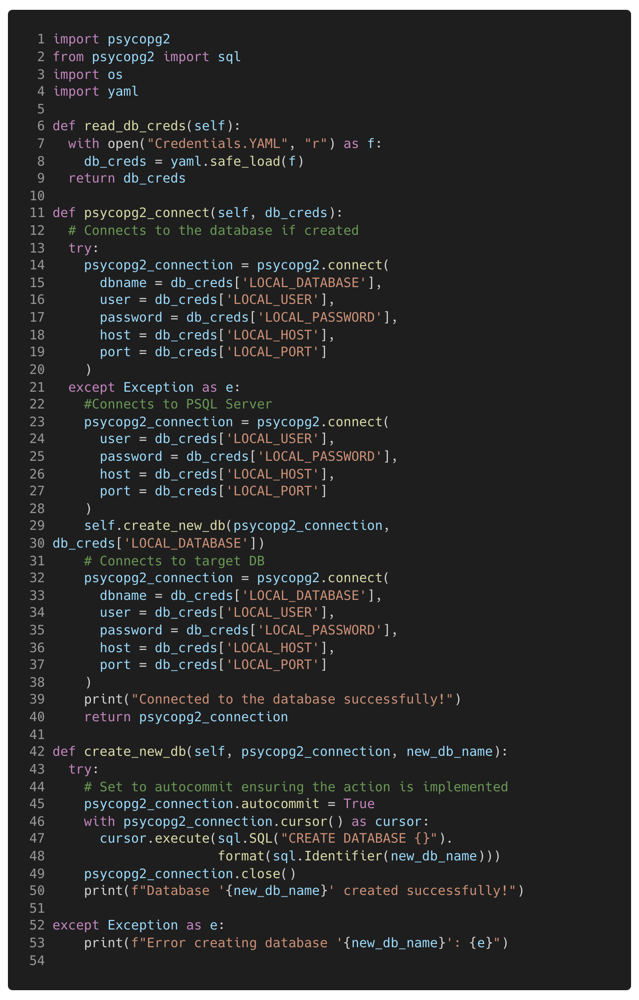
Figure 7. This code reads the credentials required for the database from the YAML file in figure 6 and uses the details to connect to the database with Psycopg2. If the database does not already exist then the create_new_db is called to create the database. Connecting with SQLAlchemyConnecting with SQLAlchemy requires an additional step than the Psycopg2 connection, this is creating an engine before establishing the connection to the database. The engine allows dialect with the DBAPI, in essence to translate the SQLAlchemy python objects / functions into SQL commands that are given to the DBAPI and in turn, actioned on the database.To create the engine, a string containing the necessary connection details is passed through the create_engine(<<Connection String>>) function (see documentation). Once the engine is created, the engine.connect() function can be called to establish the connection to the DBAPI.
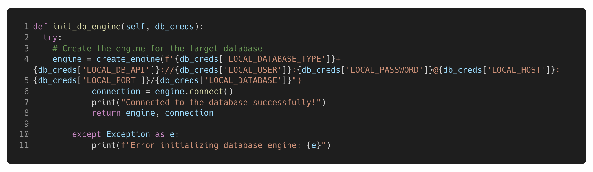
Figure 8. Code to create the SQLAlchemy engine and connect to the database. Step 3 - Creating the TablesThis is where the power of SQLAlchemy really shines. With SQLAlchemy, you can create database tables, add constraints, map Python data types to those of your chosen database server and establish relationships between tables.In the GitHub repository for this project, you’ll find a Python file called Models.py. Inside this file, there are three classes (see Figure 9 below):
class Base(DeclarativeBase)
class Match(Base)
class Shot(Base)
The Base(DeclarativeBase) class is a base class that allows for mapping Python data types to their corresponding PostgreSQL data types and is inherited by other classes such as when defining table schemas, in this case for theMatch and Shot tables. Each class specifies details like column names, data types, and relationships to other tables. A primary key of a table provides a unique ID (e.g. an ID for each shot) and a foreign key provides a typically non-unique ID that can be used to join tables on (e.g. match id that each shot occurred in for the shot table). Typically to ensure that joins are successful, the data should be joined on a primary key from one table and a foreign key of another table. As can be seen in the table schemas for this project, the primary key of the dim_match table (Match ID, a unique value) has a relationship with the foreign key of the dim_shots table (Match ID, non-unique value).
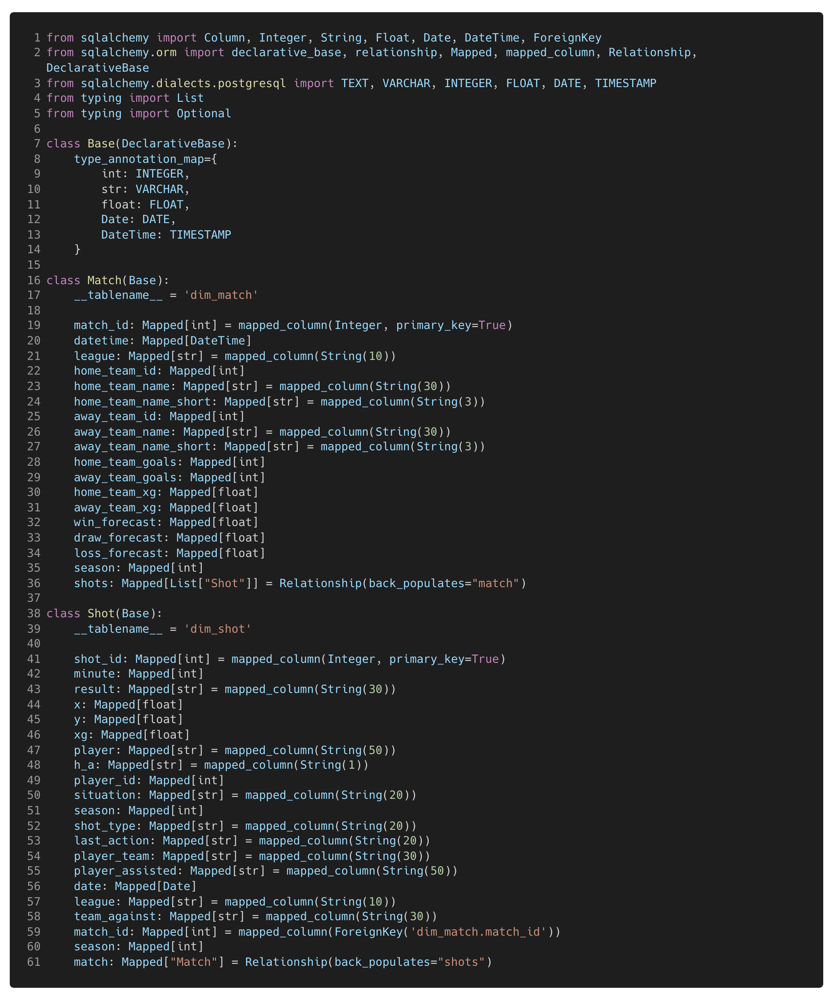
Figure 9. This is themodels.py file declaring the base class which is inherited when defining the table schemas for the dim_match and dim_shot tables defined in a separate class. The constraints and relationships of the tables are also declared.Once the table schemas are defined, the Base.metadata.create_all(bind=engine) function is called to create the tables in the database, if they do not already exist.Step 4 - Loading the DataNow that the data has been extracted and transformed, the final stage is loading the data into the database. This step can be performed using either Psycopg2 or SQLAlchemy. However, the process differs slightly between the two:With Psycopg2, data is loaded by iterating / looping through each row in the DataFrame and inserting them row by row using the INSERT SQL command.On the other hand, SQLAlchemy offers a more efficient method with its native to_sql() function. This function allows you to insert the entire DataFrame at once, with several parameters to control the action (e.g. append, update, or replace the existing table). In this project, I opted to append the data, as my pipeline is designed to only return data for games not already in the database, thus optimising the time taken to run the process on a weekly basis etc.For performance reasons, I chose to insert the data in batches of 1,000 rows at a time (see Figure 10 below). This helped avoid issues when uploading large data frames (first time running the code) and improved the overall efficiency of the process.
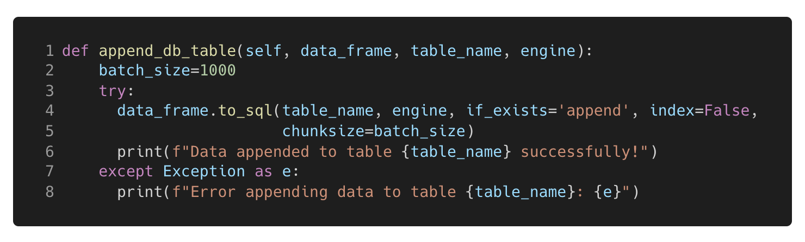
Figure 10. This function takes in the table name and the relevant data frame ready to be loaded into the table. The data is appended to the table if it already exists to ensure only the latest data collected in the code previously is added to the data table.The DatabaseThe aim of this project was to create a fully automated ETL pipeline resulting in a database consisting of a match data table and shot data table which can be queried for projects going forward. The steps outlined in this article have resulted in a PostgreSQL database consisting of two clean, 2-dimensional tables (see figure 11 below for an example of the dim_shot table).
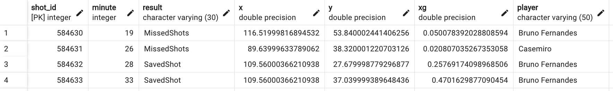
Figure 11. Example of the dim_shot table created in the database.The benefit of having a database is that you can query and wrangle the data into any format that you need in an easy and time efficient way using SQL. Queries can be written directly and returned in PgAdmin (Front-end application for PostgreSQL) or through Psycopg2 using python in your code editor (a simple example can be seen in figure 12 below). Figure 12. This code shows how a database can be queried with a Psycopg2 cursor connection. This code returns the first row of the SQL string to find the max date in the dim_match table.This article has shown how to leverage the understAPI client to extract the data, transform the data and then load the data into a database that can be used for many analyses in the future. A big thank you to CJ for asking me to feature on the site which provides some brilliant content for analysts and has certainly been a help to me. Please feel free to reach out to me on linkedin if you have any questions or wish to connect.
CJ Roundup:
I think a lot of community members probaby are use to retrieving data through various packages but to then start to think about the transformation and storage of the data, to then visualise is what has really impressed me with Jordans work. Make sure to take a look at his repo to take full advantage of learning the steps he went through. Jordan, thank you for making time.
LOGGING OFF,
CJ
 Figure 12. This code shows how a database can be queried with a Psycopg2 cursor connection. This code returns the first row of the SQL string to find the max date in the dim_match table.
This article has shown how to leverage the understAPI client to extract the data, transform the data and then load the data into a database that can be used for many analyses in the future.
A big thank you to CJ for asking me to feature on the site which provides some brilliant content for analysts and has certainly been a help to me. Please feel free to reach out to me on linkedin if you have any questions or wish to connect.
CJ Roundup:
I think a lot of community members probaby are use to retrieving data through various packages but to then start to think about the transformation and storage of the data, to then visualise is what has really impressed me with Jordans work. Make sure to take a look at his repo to take full advantage of learning the steps he went through. Jordan, thank you for making time.
LOGGING OFF,
CJ
Figure 12. This code shows how a database can be queried with a Psycopg2 cursor connection. This code returns the first row of the SQL string to find the max date in the dim_match table.
This article has shown how to leverage the understAPI client to extract the data, transform the data and then load the data into a database that can be used for many analyses in the future.
A big thank you to CJ for asking me to feature on the site which provides some brilliant content for analysts and has certainly been a help to me. Please feel free to reach out to me on linkedin if you have any questions or wish to connect.
CJ Roundup:
I think a lot of community members probaby are use to retrieving data through various packages but to then start to think about the transformation and storage of the data, to then visualise is what has really impressed me with Jordans work. Make sure to take a look at his repo to take full advantage of learning the steps he went through. Jordan, thank you for making time.
LOGGING OFF,
CJ